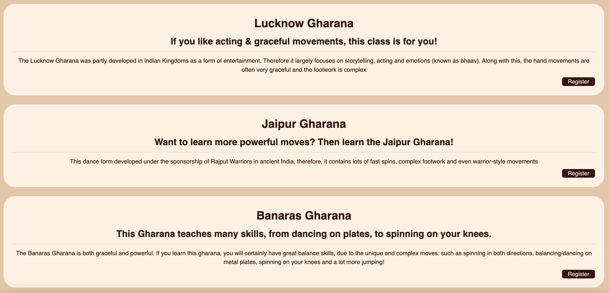
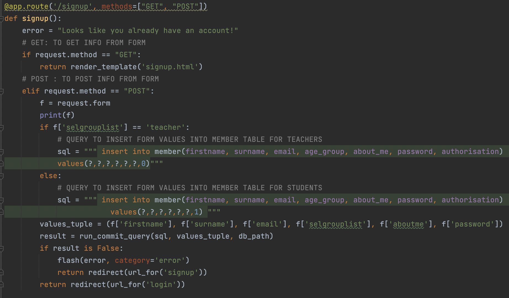

My client, Usha Bhatnagar, is an Indian Kathak dance teacher in Wellington. She wanted me to created website for the students and teachers of her dance class, Kala dance. Currently, she communicates with all of her students through emails, this is very challenging because there are three dances class, and each dance class has a various number of students. All of this becomes very challenging for her and she is unable to keep every student ‘in the loop’ about what is going on. Therefore, in my website she wanted me to include a news page, where she can add/delete and update news. Along with this, she currently organises the members of her classes (students and teachers in each class) using a spreadsheet. This has become a very tedious process for her as she has to go through each spreadsheet to add or delete members from classes. For this reason, she also asked me to create a classes page, where she can select students and add them to a class. Lastly, many people interested in joining the dance school are often hesitant as they do not know what the dance class entails. This is why Usha instructed me to include relevant historical information about the dance form, some initial info about classes and information about the head teacher.
This is my main project backlog, it is an overview plan of everything I need to do, including future aspirations (which may not be visible in the screenshot). I have a lot of content on this board, therefore not all of it is visible.
to create a functioning homepage. I need to decide on the styles and layout which I want. On this page my client asked me to include information about the head teacher (Usha) and historical information about the dance.
When I first began making my homepage, I chose the colour purple as this is my client (Usha's) favourite colour, however, when I showed this page to Usha she didn't like the colour I chose as it doesn't have much cultural significance. Red is considered an auspicious colour in India, and gold is incorporated in many textiles and in jewelry. Therefore, I decided for my banner to have gold and maroon in it, and the website to incorporate maroon and beige. In addition to this, Usha gave feedback that some of the historical information on this page was incorrect. I made sure to do more thorough research and correct my errors.
As you can see from my low-fidelity plans, I really wanted my homepage to include "image buttons". Initially, I chose for these images to be square/rectangular, but later decided that round images would look more aesthetic. I found it extremely hard to code this, as I had square images and didn't know how to make them round. I also didn't know how "combine" the button and the image. After some research, I found out that I need to put the code for the image INSIDE the button 'a' tag. To make the image round I had to use the bootstrap 'rounded-circle' class. To make the button round I made a class btn-round and used 'border-radius'. I was able to make my images round and my buttons round, however, there are some design flaws, as the button is triggered when we hover near the image (as well as when we hover on the image). I fixed this by In this sprint, I trialed various styles (such as the purple background colour, which I changed to beige). Once I finally chose the main colour scheme for my website I was able to add CSS ':root' for these and make minor changes in the shade of these colours. Creating set colours in the :root area is extremely helpful as we don't have to tediously write the red, blue, green ratios for each element in the stylesheet. Instead, we can write 'var(--beige)' etc. In this sprint I also explored flask for the first time by setting up a layout page. Flask allows me to repeat the basic layout/structure from the 'layout' page on all my other page, therefore I was able to create the basic structure for all my pages in the first sprint, this includes the navigation bar, banner and footer. The layout page is linked to the stylesheet, therefore I was able to style the navigation bar etc. Lastly, you can see that the circular image buttons contain digital illustrations of dancers. This is because I struggles to find images for these buttons; therefore I had to create illustrations.
/* Root section to add background colour etc. */
:root{
--beige: rgb(233, 198, 165);
--almond: rgb(255, 241, 225);
--light-beige: rgb(245, 220, 197);
--maroon: rgb(55, 17, 18);
--light-maroon: rgb(100, 6, 17);
}
/* NAVIGATION */
.navbar{
background-color: var(--maroon);
border-bottom: 1px solid black;
}
.nav-item:hover{
background-color: var(--light-maroon);
}
.nav-link{
text-align: center;
font-size: 1.5em;
color: var(--beige);
}
.nav-link:hover{
color: var(--light-beige);
}
nav .btn-outline{
display: inline-block;
}
.material-icons{
color: var(--beige);
padding: 0.25em 0.2em;
}
As you can see, the image is inside the 'a' tag
/* -- circular images ---*/
.rounded-circle:hover, .circular-overlay:hover ~.rounded-circle {
border:15px solid var(--almond);
}
.rounded-circle{
border:15px solid var(--beige);
}
.circular-overlay{
position:absolute;
left:50%;
top:54%;
width:100%;
transform:translate(-50%,-50%);
}
.circular-overlay p{
padding: 0.7em 0.5em;
color: var(--beige) !important;
font-size: 1.2em !important;
font-weight: 500 !important;
text-align: center;
}
.btntext{
text-align: center;
font-size: 2em;
font-weight: 600;
margin: 0;
}
In this sprint my aim was to create the information page which has all the important information about the dance class.
In this sprint, my client later got the idea for me to include a gallery with Hastak (hand gestures). Initially, I put the names and meanings of the hastak in a collapse button below. But I got feedback from one of my stakeholders (Isha) that this makes the page overwhelming as it is hard to know which name/meaning is associated with which Hastak. Isha is dyslexic, therefore, I made sure to implement her feedback so that the website is easily accessible by her. This influenced me to include the name and meaning of each hastak as captions. After this, I got feedback from Usha that some of the names and meaning I included for my Hastak were incorrect, therefore, I did more research and corrected this. In addition to this, Usha wanted the gallery to stand-out, therefore I chose to put a maroon background behind the gallery, which contrasts the usual beige background. Along with this, part way through the project Usha wanted to include a glossary in this wesbite. I put this glossary in the info page (as a collapse button), but I got feedback from Isha, that this makes the page too overwhelming. Therefore, I decided to create a separate glossary page.
On this page I struggled to find content. When I first created this page, I only had information about the equipment needed and the curriculum of junior and senior classes. This obviously wasn't enough information about the classes and made the page feel very 'empty'. After doing extra research about the dance class, I was able to include information about the timings for classes and the price for junior and senior students. Initially, I found coding the carousel quite hard, as I had many images and I needed to make sure each image had a arrow button to take it to the next image. When I first made this gallery, it didn't work as I made a mistake with the button area (below), and put the same number for the data-bs-slide-to area. Once I fixed this the carousel worked fine and I even incorporated a carousel in curriculum area (where I show two groups of students). As a dance student myself, my client wanted me to include videos of basic dance moves, however, due to time constraints I couldn't complete this. This meant I didn't fully complete the end-user requirements. In the future, I would improve my organisation skills and dedicate more time to creating videos. As you saw from above, I also made many changes in response to feedback.
Part-way through the project my client told me she didn't like the banners as they were repetitive and boring. This inspired me to incorporate the illustrations I made of people dancing in my banner. Therefore, you can see below the original banner and the banner after I incorporated illustrations. Once I made these banners, the trickiest part was overlaying the text. For these new banners I couldn't overlay the text in the middle, as these banners were asymmetrical and the illustration would have been covered by the text. Therefore, I had to create a new banner element in my layout called 'small banner', which had a 'small-header' and a 'small-header-quote'. These headers had separate styling from the main banner heading, therefore, I was able to translate the text so that it aligns to the right. In the first page, I included a Hindi quote on my banner, on the other pages I decided to use the quote area as a subheading, where I tell describe what this page is for.
This is the initial design for my database, I have added the tables as I have added items to my database. initially there was only the member and news table, but my database has gradually grown. Only authorised users, which are teachers, can add, delete or update news, as well as add and delete people from classes. The news page is a very important way for teachers to update their students about upcoming events and remind them about homework etc. Even the classes page, is extremely important as it allows teachers to organise which students and teachers should be in which class.
draw.io db planning doc
My first 'part' of the database section are 2 linked tables: the news and members table. These tables need to be linked through a foreign key so that I can link certain members with the news they post. In this sprint I will then build the news page by connecting it to the database and outputting the news items onto the page. Lastly, I will code so that authorised users can create, update and delete news using a form. Throughout this process, I will test and run. Below we can see the data plans, tests, project backlog and various tests.


Initially, I had a 'static' news page, as in, I printed my news onto the page using html and worked out the styling to go along with this. The button did not work and no one could, update, add or delete news.

I then used a select query, which reads from the database and outputs it onto the news page. As you can see in the photo to your right, I changed my styling so that my containers are round

After inserting this code into my server, we can see that when the news page is clicked, it prints the query outputs (row factory objects). I have 2 pieces of news in my database therefore it prints 2 row factory objects.

Here we can see that the every action must have an 'id' and a 'task', we can see from the above diagram the tasks and news_id's associated with each action. After this, we can see the code for deleting news (which is in the 'GET' method). We delete the news using a 'delete' query.

Because deletions only happen in the 'GET' method, we are also able to test this query. When the result is true, the item will delete. We can also see the task in the green text and below this, we can see the row factory objects of the news items remain AFTER we delete.
For 'update' (in the 'GET' method), we use a select query to select all the data for the news_id of the item. For 'add', we return the form with an id of 0. An id of 0 is never assigned by the system, therefore, if we assign this id we are able to carry out this action (as an id is required to do so).
For the 'POST' method, we can see that if we add news, we use an 'insert into' query, which inserts the values we entered in the form into the news table. If we update news, we use an update query which sets new values for the new items, using the news_id of the item.
The 'add' test prints the content we've added, below this, we can see the task 'add' in the green text and the row factory objects of all the news items AFTER this item is added.

With the 'update' test, we can once again see the updated news printed at the top, the task 'update' in the green text, and the row factory objects for all the news items. If the result is true, the news will be update.
Here is a video test for this section, this video was taken when the OLD news banner was in use. At this stage, my news page didn't have validation to prevent students from adding news. Instead, both authorised and unauthorised users could add news. I added this validation later on.
Loading the tables into the database initially took a while, but this is probably because my laptop is slow. After I refreshed the database, everything ran smoothly. It is very useful to have all the tables and data values on one file, where we can easily change the values, columns or data descriptions. Having a test file is also useful, so that we can test the code before putting it into the flask server file. The initial stages of this sprint encountered hardly any errors. The create, update and delete section also ran fairly smoothly, my query all worked fine when I tested them and when I ran the system. Later on in my development process, I also added a flash error, which tell the user if they tried to add news which already exists. Because of SQL databases built-in validaton (from unique constraints), users can't add news which already exists, however, my flash error tell them this. In my video test, this flash error was not there as I filmed the test before I implemented this. We can see an image of the flash error below.
In this sprint, I did encounter a few errors which were mainly caused by 'silly' mistakes I made. For example initially, the delete task wasn't working, but this was because I accidentally set the id as 0 (which is meant to be for adding), rather than connecting it to the ID of the news item. We can see this error in the test below, where I printed the task and id.
I also had an issue where, if I changed the title of my news, the subtitle would be altered as well. This was because, I had title in place of subtitle in the values tuple. I then had an issue where my news was printing twice onto the news page, but this was mainly an html loop issue relating to the HTML news page loop. Another issue was: when news was posted or updated, it would have the wrong time (e.g have AM instead of PM, vice versa). To fix this, I just needed to add a modifier 'localtime' in the datetime brackets. Overall, all these issues were fixed. The issue I still haven't been able to fix is the line breaks in the news CUD form. Currently, even if there are line breaks (using || char 10 || ) in the database, it doesn't show up when outputted onto the news page. Similarly, if the user tries to do a line break when adding or updating news, this doesn't show up when the news is pritned on the page.

To create a new section of the database: classes. Firstly, I will create a classes table, which will contain the title, subtitle and description of our 3 classes. I will create a HTML classes page, which is linked to the database and classes data will be outputted onto the page. Then I will create an association table, registration, which links the member and classes tables through the member_id and class_id. This association table will allow me to insert students into each class. Following this, I will create a registration HTML page, which will output the members of each class. Lastly, authorised users will be able to add and delete members from each class. Member are added using a small form on the registration page. Below we can see a picture of the project backlog and various tests.


This is a test I did within the testing file, where I used a select query to select the class data, and printed the class name

I then did a test where I printed all the class info

Currently, the register button was not functional, these became functional once I started working on the registration section
I got feedback from a key stakeholder (Adia) that I did not have enough images on the classes page; therefore, my page was looking boring. I didn't have any images to include, therefore had to create illustrations.
In photos below we can see a query I did in my test file, where I joined the member and classes tables via the registration table using the member_id and class_id. Then I printed the name of the members in the registration table and the name of the class they are in.

I then tested a query for my select form in the registation page. I initially wanted to print the firstname and age group of the member on the select option, therefore I used a select query to select these columns from the member table. The idea is that these values would be outputted into the select options in the form, which asks you to select members

In this first photo, we can see the test query has been implemented into the 'GET' method of the code, this is so that we can request data from the classes, members and registration tables. As mentioned before, this test query links the classes and member table through the association table, registration (suing the member_id and class_id). This query is used to output the members in each class onto that classes' page. Within photo, we can also see the select query used to select all the members. This is done so that these values can be outputted in the select button to add members. We can see that the member_list below this query contains the run_search_query_tuples result.

In this part, these are the queries for deleting and adding members. In order to delete a member it requires a task, therefore if the task 'delete' is present, then a delete query is used to delete this member. This is done by deleting the member from the registration table, where the member_id matches the member_id of the person we are removing, and the class_id matches the class_id of the class we are deleting from.
The 'Add Member' form on the registration page used the method="POST", therefore, no task is needed to add a member, instead we just need to request method="POST". Then we use an 'insert into' query to insert the member into the class. We do this by inserting the member_id (of the member selected) and the class_id (of the class they are registering in) into the registration page.


This shows the Row Factory objects when we reach the classes page
This when we add a member, in the server run file we can see the member_id (known as name_list) and the class_id which is passed into the registration table

Lastly, in the video below we can see a full run test of the classes section. It is important to notice the small orange tabs, which show-up in the bottom-left corner when certain buttons are hovered over (e.g delete). These show the task or ID's for certain buttons (e.g delete button). In this video, it's also important to notice that, due to the unique constraints in the database, you cannot add 1 person to a class more than once. I added a FLASH error, which pops up and tell the user if the member is already in the class. This is extremely important validation as it means we avoid double ups. It would have been nice if a notification popped up when a member is added to the class. This would have enhanced the visibility of system status and overall usability of my site, this would be something I would improve in the future.
Overall, now that I have practice after the news section, I didn't encounter many issues when creating the tables and inserting values into them. There was a moment when my unique constraint wasn't working, but this was an error from my part where I accidentally inserted "Abhi Banaras Gharana" twice into the registration table. It took a long time to figure out how to execute my ideas, as I had many components to this database which I wanted to execute. For example, writing a query to join tables was initially challenging, but I quickly understood how it works. Outputting the data and deleting members became fairly intuitive as I used similar techniques in the News page, however, the most difficult part was definitely the 'add member' option. Below we can see an unsuccessful test for adding members. This had countless issues. From this test, I understood that I don't need a task for adding members, as I am directly posting this from a form which uses the 'POST' method. Nothing else in the classes section uses the 'POST' method, therefore I realised I can just use the post method when adding members to the registration table. I also realised that I need the 'GET' method to request the member data using a select query, I do not need it to insert values into the registration table, that comes after posting. Therefore, this initial add_member test actually helped me structure the final registration function which I use now, as I realised how to structure my ideas.
Lastly, another issue I encountered was with outputting the members into the select options. Initially, my query only selected members IN the specific class rather than ALL the members. This is because I was selecting members in the registration from specific classes. This meant members already in the class were showing up in the select options. We can see an example of the issue below:
I soon realised that I need to select all members from the MEMBER table. This allowed me to fix my query

I also had issues with the loop structure.


In this sprint I am linking the member table to the signup form. Before, the signup form was just 'static', meaning that none of the form data was collected or passed to the database. Now, using an 'insert into' query, I am inserting the data into the member table. After this I will begin working on the login page, in which will ask for the email and password. Using a search query, I will select the details for the member table where the email = to the email entered in the form. This is an important search query as it checks whether this email is in the member table and therefore, if this person has signed up. Lastly, if the password in the database matched the password entered in the form, we start a session. Lastly, I will create a function which allows user to logout by clearing the session. Below we can see the data plan and project backlog. In this sprint, my reflection is integrated throughout my examples, as I reference what went well (my successful tests) and issues which occured
Initially, when I was beginning to code my signup page, I coded it completely wrong, using the wrong method and the wrong type of query. As we can see below, I have my query in the 'GET' method, in reality, it should be in the 'POST' method and then I should have an 'insert into' query to insert the form data into the member table once the form has been submitted/posted. I initally wrote this in my test file and I thought it was 'correct' because I forgot I was supposed to insert values into the member table instead.

Once I realised that I should be inserting values INTO the member table and not selecting them from the member table, I began coding the correct query in my server. I should have originally coded this in my test file rather than straight away coding this in my server. If I were to repeat this process, I would make sure to get a successful test before adding it to my server.
Before I show you my final code. I found it very hard to work out how to insert the correct authorisation into the member table, based on whether they are a student or a teacher. As you may know, in my signup form you must select whether you are a teacher, senior student or junior student, you can only select 1 option. Teachers are supposed to have an authorisation of 0, and students are supposed to have an authorisation of 1 whether they are a senior or junior student. Below are some examples of unsuccessful ways I tried to insert the correct authorisation into the member table.
In this first photo below, I was initially trying to start a session as soon as the person signs up. However, in this test, I tried to set the authorisation in the session to a particular number before I inserted the form data and authorisation into the member page. This didn't work as the system didn't recognise 'age_group' and the authorisation number I set was not being inserted into the table. Overall, this if/else statement didn't work.

In this next test, I got very close to my final code, I realised that the best way to do this is to have a separate 'insert into' query based on whether you are a teacher or student. However, there were still many issues with this code. Firstly, my if/else statement wasn't working because the system didn't recognise f['age_group'].

In my final version I changed this to f['selgrouplist'], this worked as the name of my select group options is 'selgrouplist'. However, after this I still had an error, except this time it was because 'teacher' wasn't recognised. In my form the select option for 'Teacher' has a capital letter at the start, in my code I wrote 'teacher' without a capital at the start. This meant that the system wasn't recognising the teacher option in my form and inserting an authorisation of 1 for both students and teachers. I fixed this issue by making the teacher option in my form and database not have a captial letter. This doesn't need further validation because the capital letter in the select option can't be changed by the user. Along with this, you can only select 1 option, therefore users can't enter any other age group or multiple age groups. Therefore, this should work no matter what. Lastly, you can see in both of these tests, I tried to declare a session in the signup page, however, I realised that it is probably better to redirect the user to the login page, where they can login and a session can be started.

Below you can see a screenshot of the final code for my signup page. With the 'GET' method, we 'retrieve' the signup page. In the 'POST' method, we request the data from the form and begin inserting it into the member table. In my form, I have an option where you can select whether you are a teacher, senior student or junior student. As you saw above, it was very hard to find a way to insert the correct authorisation into the table, but I eventually worked this out using an if else statement. If the select option is 'Teacher', we insert all the form data into the table and an authorisation of 0. Else (if they are a senior or junior student), we insert all the form data with an authorisation of 1. We can see at the bottom of this code, if the result is false we show an error. I used a new convention here, 'flash', which flashes the error at the top of the page and the user can press the 'X' button to get rid of the notification. If the user successfully signs up, they are redirected to the login page to login.


We can see in this test below, both the senior and junior students who signed up were assigned an authorisation of 1 and the two teachers were assigned an authorisation of 0 (we can see the authorisation in the last column).
Before I started working on the session part of my login, I first tested my select query test if it selected values from the member table WHERE the email is equal to the email which I put in the return render template. This is an email which is already in the member table. This test was successful, but instead of testing this in my test file, I straight-away started coding in my server file. Throughout the login I took tests while coding in my server file, however, in the future it would be better to code this in my test file before implementing it into my server
For the login section, I created a smaller form, which only asks for the email address and password of the user. We can see from the server file below that I am using a select query, which selects the values from the member table where the email is equal to the one entered in the form. This query is a good way to check if user is in the member table, therefore it checks if they have an account. Then we can see that IF we receive a and IF the password of our result is equal to the password in the login from, we begin a session. The session is a very crucial part of the website, as it means the person can remain logged in. In this session, we set values based on the values we selected from the database using our select query. After this we redirect for the index/homepage, if this "if" statement doesn't work, then an error message "credentials not recognised" prints and the session in NOT started. We can also see that I printed the authorisation values to test whether my session code worked.

We can see that when the form was filled in, the session was successfully printing in the server run


Lastly, I created a very simple app.route / function to logout the user, all we need to do is clear the session. The next step I took was validating the homepage, news page and classes page. In the pictures below, you can see the code which validates each page.
On the homepage I added validation which meant, if a session has been started (user is logged in), the 'signup' and 'login' button is replaced with a logout button which is linked to the logout app.route. A member_id session is also required, this is because the Flash notification 'creates its own session', but without a member id. Without requiring the member_id, it causes the logout button to show up even if the user isn't signed in. Therefore, we require the member id.

On the news page, I added validation so that, if you are logged in (session started) and if you are a teacher (authorisation 0) then you can add or delete news

I then added validation which meant that, if you are logged in and if you are a teacher, you can access the registration page. Accessing this page means you can see the members and add or delete members of from each class.

This was a very small sprint where I created a glossary by creating a glossary table in my database, and outputting its values onto my glossary page (in a table). I didn't face many errors in this sprint.
In conclusion, I have included various tests and evidence which show how my program has gradually
developed. Even though it was challenging at times, I managed to fix all the issues which occurred in
my sprints and did a final video test run to show the functionality of program at the end of each
sprint. In this database, I created a glossary table which is outputted onto a glossary page,
this data doesn't need to be connected to any other table. Some improvements that could have been made to the
website would be: allowing users to confirm/edit/delete their details once signing up, allow members to add
words to the glossary and more images. I was following Agile proccesses, which includes planning, testing and
reviewing each sprint, however, I don't think I did enough planning. I only made low-fidelity plans and banner sketches in the initial
stages of developing my website. This meant that if my client didn't like any changes I made, I didn't have any
fresh plans to base my new design off. This resulted in me spending many hours trialling various styles. In the future,
I would try to plan each sprint with pseudo code and low fidelity sketches. This way, I would waste time trialling styles
and code. One future aspiration is to connect every Hindi/Sanskrit word in the website to the glossary page so that people
can click on the word and it takes them to the glossary page (similar to Wikipedia). Another future aspiration
for my glossary page is to include videos or animations on how to pronounce certain words (as Hindi/Sanskrit
words are hard to pronounce). However, these elements weren't priorities therefore was unable to do them due to time constraints.
In terms of my digital outcome, it is functional and the front-end is aesthetically pleasing. However, throughout
my reflections I highlighted certain aspects which could be improved or aspects which were challenging. Firsty (as mentioned many times),
I found it very hard to find images for my website. This is mainly because I wanted my website to include South Asian Students wearing
traditional clothing (because it suits the aesthetics of my website). However, it was very hard to get these images as most dance students
show up to class in casual/western clothing (and Indian clothing takes a while to put on). For this reason, I did not have enough images.
This meant I had to resort to creating digital illustrations and implementing these throughout my website. In the
future, I would spend more time trying to organise 'photoshoots' with dance students. Along with this,
I couldn't include dance videos (requested by my client) due to time constraints, which means I didn't fully meet the end-user requirements. In the
future I would improve my organisational skills and dedicate more time towards this. One feature of my outcome, which was challenging was overlaying text
over the banners. This was challenging because, for my homepage banner, the text needed to be overlayed in the center. For the other pages, the text
needed to be aligned to the right. This meant that (in my layout page) I needed to have a separate banner area for the other banners. I'm not sure if
this was exactly the right approach as it was a little repetitive, however, it was functional.
Decribe: To ensure we are following the relevant implication of privacy, we must ensure we have kept personal data safe. We should make sure that only authorised users should be able to access certain personal data. The data shouldn’t be easily and directly accessible by the user, we can test this by seeing if http://127.0.0.1:8000/data takes us to the data folder. In addition to this, it is standard for passwords to be ‘hashed’, meaning that the password is converted into a series of letters and numbers using an encryption algorithm. Lastly, we shouldn’t collect unnecessary data from the user.
Address: While constructing our database and integrating it into the website, I didn’t address privacy as much as a professional web developer would. For example, I do not have an encryption algorithm to hash password, in the future, I would include this to further increase the privacy of my database. However, we had some forms of data protection. For example, the data was not directly accessible via the http://127.0.0.1:8000/data link, and instead, an error page was given. I don’t collect too much personal information from the user, other than their name, I ask for their email and whether they are a student or teacher. Asking whether they are a student or teacher is purely to increase the privacy of this database by making teachers authorised users. In my database, on the registration pages for each class, the students and teachers in the class are displayed. In order to view the class members, you must be an authorised member, which is a teacher. This is good because it means that not all users can view who is in each class. However, one issue is that anyone can sign-up and become a teacher. If this was a real dance class, I would put extra measures in place that require the teacher to provide some form of identification that they are a dance teacher from this school.
Describe: Intellectual Property relates to 'who owns material'. When a website is created, all images in the website should be owned by the developer (not stolen from the internet). In addition to this, the website should have a protected IP, and all the images on this website should be protected.
Address: In all honesty, I didn't protect my IP address and the images on my website very much. I was able to get my website live, but I wasn't very sure how to 'secure' this website to make sure it's not easily stolen. In addition to this, my github repository for this page is public, therefore, anyone could perhaps view my code and copy it; as I do not have any legal documents to protect my material. In terms of images, I made sure all images were owned by me, or I took the permission of the person I was taking the image from. When I didn't have enough images, instead of taking them from the internet, I made digital illustration. This was to ensure all the intellectual property was owned by me.
Describe: For a database to be functional, there shouldn’t be any glitches, all queries should work correctly and all the buttons to carry out those queries should also work. The database should have also been tested regularly while we were coding. There shouldn’t be any errors when carrying out queries and the data in each column should be consistent. Foreign Keys must also be associated correctly. E.g the correct member must be associated with the class their in, or with the news they’ve posted. We must address Functionality through accurate entity relationship diagrams, creating an SQL installer file so that it's easy to make small changes and corrections in the database and extensive testing of the database queries and how they are outputted onto our web pages.
Address: Throughout this process, I tested my database consistently and comprehensively. I ran many tests for my queries in the testing file and within my server. I also viewed my tables to check that the data is consistent, e.g. the date being in the SQLite data format: "YYYY-MM-DD HH:MM:00". When checking the consistency of my data, I noticed one issue: the students I inserted into the database only had the word ‘student’ in their age group. Whereas, those who signed up through the form had ‘senior student’ or ‘junior student’ in their age group. Because all my data is in my SQL installer file, I easily fixed this inconsistency, by changing all the students in the member table to either ‘senior student’ or ‘junior student’; without facing any other problems. This SQL installer file has given me the confidence to alter my data and rebuild my database throughout this process, allowing me to refine my database design. Pieces of data such as my member name or member email only appear once in my database. Most importantly, I have made member emails unique because these are necessary to distinguish between members in the table. Two members could have the same name despite being two different people (e.g John Bradon), having the email unique means we can still distinguish between them. I have also made as many data fields as I can unique and not null, this means that the database is ‘self-validated’, as it is able to spot when a unique constraint is failed (e.g repeated entries), or missed fields. If I require items from my member table in other parts of the database (e.g a member name posted with a news item), I link them through foreign keys. Lastly, Bootstrap has built-in validation, such as not allowing empty fields in forms. Bootstrap also allows the developer to write the specific type of data being requested in form questions (e.g email), therefore, if the user enters an email address which doesn't follow the typical format for emails, bootstrap will ot allow the user to submit the form until a valid email is entered.
Describe: For a website to be usable it should show when an error has occurred (visibility of system status) and allow users to correct it and it should use recognised conventions (match between system and real world). An Accessible website should cater to everyone's needs, e.g dyslexic, colourblind people. The website should also be viewable on different devices or with different screen sizes.
Address: Throughout my program, I have included error messages, such as: for news I have an error page which reads "do not know what to do with create, read, update on news (key not present)", similarly with the login, an error message is printed if credentials are not recognised. For the signup page, I also printed a flash error which tell the user if they already have an account. For the classes page, I included a flash error which tells the user if a student is already in the class. Lastly, for the news page I included a flash error, which tell the user if the news they are adding already exists. When the error is presented, the user has been redirected to the page where they need to correct the error. For example, on the signup page, if the user already has an account it redirects them to the login page and shows the FLASH error message "looks like you already have an account". The usability of this site would have been improved if I added a confirmation message when a student is added to a class (for visibility of system status). One thing which I was not able to include was an option for the user to edit their details once they sign up. In my current design, the user fills the form and once they submit the form, their details are inserted into the member table straight away. They are not given the option to confirm, edit or delete their account; they can only logout. In the future, I would definitely implement this in my design, as currently, the user is 'trapped' in the Kala dance online community once they sign up.


In terms of functionality I used contrasting colours and tested this with various colour blind filters. In general and with various filters, the Hindi text on my banner is slightly hard to read, as it is small & clashes with some of the gold colours in the banner. However, this text is mainly decorative as most of my user's can't read Hindi. Desppite this, in the future I would perhaps make the Hindi text bigger or use a brighter beige colour to make it more visible. One positive is that the English translation for this quote is extremely visible as the text is maroon and the background is beige. Another way in which I considered accessibility is by considering my dyslexic user. I made sure to regulary review my sprints with her to make sure that the layout of my pages wasn't too overwhelming. I also did research and used Open Sans font on my website, as it's a readible font for those with dyslexia; because it doesn't have any 'fancy curves', the letters are well spaced out and bold. I also made sure NOT to use italics, as this can make it hard for dyslexic students to read. Lastly, I considered the my website on different screen sizes. I made sure to use @media queries to adjust elements in my code based on different screen sizes. This was helpful, as I made sure that everything in my website resized until the smallest screen size. But I still faced some issues, as when the page size reduced, the banner in all my pages often becomes much smaller than the images on the page (even carousel images), therefore this makes the page look un-proportional. When I tested my website on my phone, there we also a few pages in which the text was 'overflowing' from the banners. On some of the other pages, the banner was cut-off slightly. In addition to this, the banner was very small compared to images in the website (similar to small screen size on laptop). Other than this, the website was functional on the mobile phone and all the text was readable. In the future, I would consider a 'mobile first' technique, where you test the website on a mobile phone before testing it on a laptop.

Describe: Sustainability and Future-proofing means the database should be able to be updated and extended, and we should be able to add new features. The database should be coded in such a way that it can be handed over to another developer who can understand it easily, and develop it further. We should have different tables for different entities. In addition to this, we should be able to add more data to existing tables, change values, change data descriptions and link in new tables without needing to change any pre-existing tables. We can do this by using foreign keys, which means that any updates to the data, such as the member name, only need to be changed in the member table once. It is then changed in all the linked tables (through the foreign key), and the values would automatically update if it’s used in any queries.
Address: In my database, I had a different table for members, news, classes and registration. This allowed me to link various tables together through foreign keys, for example, the member and news tables were linked through a foreign key and the member and classes table were linked through an association table, registration. This also meant that any changes I made to the data values in my table, were automatically changed in the other tables. We saw an example of this when I changed ‘student’ in my member table to ‘junior student’ or ‘senior student’. Due to the SQL installer file, it also makes it easy for anyone in the future to make changes to elements in the database as all the data-tables are in one area and are connected. This means new variables, new tables and new values can easily be added to the database. This website allows for change, as authorised users can add/update/delete news and add/delete class members. This means that the website is sustainable and future-proofed for users. One area which could have been improved was the glossary. Although changes can be made to the glossary table in the SQL file, changes cannot be made by the user. The glossary page is presented as a static page (despite the values being in the database). This means if the website is updated and new Hindi/Sanskrit words are added on other pages, the user can't add these words to the glossary. In the future, I would allow authorised users to add new words through a form on the website.
Describe: For a website to be aesthetic, it must have minimalistic design features (e.g minimal colour pallet) and a match between the system and real world.
Address: In my website, I kept my colour scheme to a minimum of maroon, beige and a little bit of red. This ensured that my website wasn't too overwhelming to look at and was cohesive. I also used conventions that match between the 'real world'/modern websites. For example, my navigation was at the top of the page, with the login/signup/logout button in the top right corner. The 'match between system and real world' makes the website easy to navigate and not overwhelming for the user (as this is a convention commonly used in other websites). I also included some of my own design features, for example on my website 'interactve features' (e.g forms, news items, classes, class members) have round containers, whereas I chose for 'static' pages to have non-rounded containers. This made it easier to distinguish between interactive pages and non-interactive pages. Lastly, (because I didn't have enough images), I made digital illustration. These illustration were aesthetic as they were minimalistic (not much detail such shading), and they followed my maroon and beige colour scheme. One downside was that they were used quite frequently in my website (in the banners, in the circular image-buttons, and in the class page). Because of this, it may cause my website to be less visually interesting. In the future I would dedicate more time for finding images, as this would ensure variety in my website.
Describe: This means that the data needs to be queried and outputted in a way that caters to the user's needs; for example, we could make sure that it appeals to the right demographic. It should be presented so that it ‘matches the real world’ in terms of the user’s expectations for a modern website. We can do this by presenting data in a clear organised structure. Along with this, forms should allow the users to add entries and update or delete existing entries in the database. For the digital outcome, it should include features that follow the client's requirements and that consider the main stakeholders/end-users.
Address: In my database design, end-user considerations are evident in the news, classes and registration page. On my website, all the data information is outputted in a tidy manner; such as each individual news item, classes and class members being 'wrapped' in their own container. Users are able to update news and classes in a way that aligns with the ‘the real world’ and modern websites as they use simple forms. This makes it easy for users to understand what to do on each page. On my news page, as soon as the change has been made (in the news_cud form), it redirects to the news page, where we can see immediate confirmation that our action has occurred. The same applies for registration, where the user can immediately see if they have added or deleted a user, as both these actions occur on the registration page. However, one way I could improve the registration page in the future is by giving the user conformation of a student being added to a class. For my signup and login form, the user receives an error message that clearly communicates the reason why the action has failed, e.g. credentials not recognised for the login page, and 'looks like you already have an account' for the signup page. For my classes page, I do have an Flash error for when the user tries to add a member who is already in the class.
One way I address end-user considerations is by considering my stakeholders. By following UX design principles, I was able to identify my stakeholder and identify their needs. My stakeholders are Indian dance students (who are the most common members of this dance class). Throughout my website and my data (such as news, classes, etc.), I have been considerate of Indian culture, by using the correct words used in Kathak dance, such as Gharana, Tukda, Tatkaar, etc. I made sure not to use English translation of theres words in my website, as I didn't want Indian students to feel that their culture/language has been adapted to cater to a non-Indian audience. I have also considered the non-Indian population or those who don't understand Hindi terms and dance terms by implementing a glossary. This glossary is in my database and allows those who don't understand certain terms to learn the meaning and pronunciation. Along with this, I chose to only use images of South-Asian dancers. This is because, although Usha's class is diverse, I wanted South Asian students to feel represented within their own culture. One way I didn't fully meet end-user requirements is by not including dance videos which were requested by my client. Due to time constraints, I wasn't able to create videos of basic Kathak dance steps, which meant I didn't meet this requirement.
After all these test, I tried to minimize my errors a much as possble, such as reducing the length of ALT tags. I also fixed structural issues (e.g h1 header followed by h3 header), by chaning the order of headers. Lastly, there were some errors (e.g contrast errors), which I couldn't change as i would need to change my colour scheme for that. However, the contrast test shows that, to make my website more accessable, I could have use more contrasting colours. The empty button error seemed to be related to the hamburger symbol, therefore this was a error I couldn't fix

Here are my errors before and after I fixed them (as much as I could)